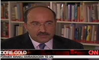

How Tehran Defies the West Diplomatic engagement with Iran, Dore Gold, Israel's former ambassador to the United Nations and author of the New York Times bestseller Hatred's Kingdom warns, has never worked. Iran has pursued its nuclear ambitions at first in secret and then in defiance of the United Nations and Western protests--and it will not be stopped by Western diplomats waving olive branches and offering promises of aid or threats of sanctions. In The Rise of Nuclear Iran: How Tehran Defies the West, you'll learn:
Alarming and compelling, The Rise of Nuclear Iran: How Tehran Defies the West, confronts us with the most important foreign policy question of our time: will Iran be allowed to become a nuclear power--and at what cost?
From the Introduction:
From 2003 to 2005, Iran's chief nuclear negotiator was Hassan Rowhani. He represented Iran in the key negotiations that resulted in a temporary suspension of its uranium enrichment activities in 2003. Despite being replaced in August 2005, anything he said about Iran's nuclear program was extremely sensitive. He made a staggering disclosure in a speech delivered in a closed-door meeting in Tehran as he was leaving his post, when he bragged that he had successfully outmaneuvered--and essentially deceived--the Western powers, led by the European Union, with whom he had negotiated: "When we were negotiating with the Europeans in Tehran, we were installing equipment in parts of the facility in Isfahan." Isfahan was known by Western intelligence agencies to be precisely where the Iranians had erected a facility for completing the second important stage in the production of fuel for their clandestine nuclear weapons program...
Maps Portraying the Iranian Nuclear Threat:
|
|
|
|
 Buy the Updated Paperback Edition
Buy the Updated Paperback Edition

Dore Gold on CNN
 Maps Portraying the Iranian Threat
Maps Portraying the Iranian Threat
Home Bookshelf About Dore Gold Media Updates on Iran Further Reading Jerusalem Center